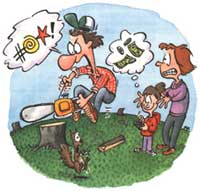

LAST LAUGH
As I lost control of my temper, my daughter found a small fortune.
"We need more firewood - pronto," Joy advises this morning. My wife comes from Vermont, where the laconic locals keep 50 cords of seasoned oak on hand and get paranoid with less. Out here in Oregon, the winters are merely cold.
It's a nice clear Saturday. Self, wife, and daughter pile in the old pick-up, grunting in low gear as we climb five miles up to a vast clear-cut: the result of rising timber prices and logging methods based on frenzied economics rather than planetary values.
Serenity, our nine-year-old, gets out of the truck and frowns. "That's big-time ugly," she says.
"No amount of profit," I expound in fatherly tones, "can mitigate the bio-trashing of clear-cuts. But among all this waste, there's an awful lot of firewood." Joy and I share a smile. The idea today is not only to cut some fuel but also to instill lessons about ecology, especially because this clear-cut is our backyard environment.
This should be an educational and rewarding field trip. A cigarette would make it ideal, but I quit smoking almost a year ago (341 days, seven hours, 15 minutes). For today, I stick with chewing gum. They say the nicotine urge does go away completely - when you're dead.
My urge to buy a new chain saw is stronger than ever. The technology of gas-powered saws has advanced so far that mine is now an unsafe clunker by today's standards. Like me, it's old and temperamental. It started fine last night, in a heated garage under optimum test conditions. Ten pulls on the starter rope have no effect. Ten more prove the adage that wood warms you twice. Fifteen more erode my sweet disposition. Ren goes off to find wood chunks. "Did you check the gas?" Joy asks.
I flash her a fairly sardonic look. "Of course I checked, darling." I check again ... plenty of gas. Must be the points. "Must be the $@#*! points," I say aloud to myself.
"Twenty-five cents," Ren calls happily from the other side of the truck, bringing back a huge log in her arms. She tosses it in the bed with a crash. "That's another quarter you owe me, Dad."
Let me explain. I was a carpenter for 20 years, a trade that enriched my vocabulary with earthy and useful words. When, for instance, my computer goes down and dumps a thousand precious words into cyberspace, I don't say "oops." But having a child is like raising a tape recorder that's always running. So putting a bounty on bad words seemed like a good idea at the time, a way to clear up our verbal environment and, it turns out, to teach Ren the (cash) value of paying attention to what we say.
We should really have collected wood last summer. Unfortunately, wood cutting is prohibited during the hot days of fire season. How the heck, I complain to Joy, can we get dry firewood if we can only cut it when it's wet?
"It's a conundrum, all right," my wife says philosophically. I start to explain that a conundrum is a riddle whose answer is a pun, but then the chewing gum slides behind a molar and I chew the side of my tongue with a crisp crunching sound. "Arooo!"
"What's wrong?" Joy asks. I eject the gum wad and some pink spit. "Ptha. Bip my thung. $@#*!"
"Twenty-five more cents," Ren calls.
Joy explains that Daddy won't require a running tally at the moment, but she can submit a bill tonight. Now I really start yanking on the chainsaw rope, my lips barely moving as I trace its ancestry in a mentally screamed tirade whose cleanest word is "filthy." No good. No luck. No spark.
We decide to bag the whole expedition and go home, and that's when the truck joins the chain saw in an internal combustion strike. It won't start, either - darn points, no doubt. After muttering a few disappointed adjectives over it, we lock the useless chain saw in the useless pickup and start to hike downhill. It's a long way back through some pretty country. When Ren's little legs get tired, I carry her the last mile on piggyback.
We make it home by twilight, turn on all the electric heaters and have supper. "All right, bedtime for garbonzo," Joy tells Ren and we go upstairs to tuck her in. Kiss goodnight, turn off the light.
"Today was fun," Ren mumbles, drifting off to sleep. "Oh, by the way, Dad owes me three dollars now. And 50 cents."
|
 |
|
|